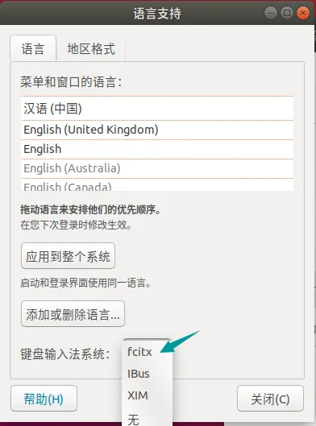

Ubuntu作为Linux系统分支中十分流行的操作系统，2020年以前已经发布最新19.10版本，同时全球市场占有率也排名第3（统计来源），作为经典的Linux桌面系统，目前的生态是向好的，而且即将发布的Ubuntu 20.04 LTS也许将带来更多的惊喜，对于想尝试Linux系统的新手而言，这是挺好的一个选择。现在Ubuntu的中文支持也很好，推出了中文版Ubuntu即优麒麟（Ubuntu Kylin）。本文的很多用法不局限于个人使用较多的Ubuntu或商业使用较多的Centos，对于多数常用的Linux发行版本都可适用。
根据2020年5月Statcounter的调查，桌面操作系统市场中Linux占比为1.68%，而根据W3Techs的调查，服务器操作系统Linux占比达到43.1%，根据Top500的统计，2019始超级电脑操作系统占比中Linux则占据100%。相比于Windows占据桌面操作系统市场，Linux在服务器端以及超级电脑方面则处于绝对地位，对Linux及其衍生系统的学习也是必要的。


基础
目录结构
Ubuntu的文件系统目录结构可以参照Linux的目录结构，相比使用Windows系统，在使用Linux系统中对文件目录的了解是至关重要的。此处我罗列了Linux的文件系统目录标准（FHS）以及特殊的目录及用途[1]。
- FHS
- 特殊目录
Linux终端命令
使用Linux系统则意味着可以随时摆脱桌面的存在，将更多资源赋予更需要的程序进程使用，而脱离桌面后所有的系统操作都将使用终端下的命令来完成，这也使得操作更加快捷高效。之前看到来自LinuxTOY的一份Unix/Linux 命令参考[2]，便转载自此，基本都是常用且基础的终端命令。
- 文件命令
- 系统信息
- 压缩

- 进程管理

- 网络
- 文件权限
- 安装

- SSH
- 快捷键
- 搜索
修改软件源
在Linux的软件管理体系中，软件源是关键所在，由于流行Linux系统多数服务器不在国内，不少国内用户安装完Linux系统之后首要做的就是修改软件源，这样更新或安装下载时速度会相对快。针对不同的Linux发行版，软件源是存在差异的，从我认知的主流Linux分支操作系统而言，可以有以下两种：
- Ubuntu（Debian），使用apt-get源，使用包管理工具 Advanced Packaging Tool；
- CentOS，使用yum源，使用软件包管理器 Yellow dog Updater, Modified。
这两种的源修改方式原理是一致的，所以我按以下步骤来叙述： - 国内源
国内不少企业或高校都有做源镜像，选择也有很多，我这里主要介绍阿里源、中科大源、清华源和网易源（均以Ubuntu为例）：
- 阿里源，即阿里云开源镜像站，选择
Ubuntu，会给出不同版本所需的源信息，使用对应版本的即可。 - 中科大源，即USTC Mirror，选择
Ubuntu源使用帮助，会给出详细的源修改过程与选择。 - 清华源，即清华大学开源软件镜像站，选择
Ubuntu旁边的❓即可看到源信息。 - 网易源，即网易开源镜像站，选择最右侧一栏的
Ubuntu使用帮助即可看到不同版本的源信息。
- 更改源路径
在修改源之前，对旧源文件做个备份，之后即可添加上述任意一个国内源信息到Ubuntu源文件sources.list或下载源文件到centos生成缓存，完成源文件修改如下：
|
|
- 源描述[3]
其实源本身是有一定结构的，以Ubuntu16.04版本的中科大源为例子：
|
|
- 第一个单词代表包的类型，deb表示二进制包，deb-src表示源码包。
- 第二个网址表示源的地址。
- 第三个单词表示系统的版本，既可以是[ wheezy | jessie | stretch | sid ]中的一种，也可以是[ oldstable | stable | testing | unstable ]中的一种。前一个系列表示系统的release code name，后一个系列表示系统的release class，前者按阶段发布，后者持续演进。例如在Ubuntu系统中，
xenial代表的是Ubuntu16.04版本，如果是其他版本可将其替换为其他版本代号即可:20.04:focal；18.04：bionic；17.10：artful；16.04：xenial；14.04：trusty。 - 第四部分表示接受哪种开源类型的软件，可以包含[ main | contrib | non-free ]中的一个或多个。main表示纯正的遵循Debian开源规范的软件，contrib表示遵循Debian开源规范但依赖于其它不遵循Debian开源规范的软件的软件，non-free表示不遵循Debian开源规范的软件。Debian开源规范指DFSG（Debian 自由软件指导方针）。
中文输入法
Linux系统本身输入法并没有带中文输入，对于习惯使用中文环境的国人会比较不适应，尽管常态下英文也足够使用，但是增加中文输入法并不困难，在熟悉的输入法下也会舒服一点。默认情况下，Ubuntu系统自带中文输入法，且切换快捷键为win+space，但是体验并不流畅，故我更愿意花几分钟安装更舒服的中文输入法。中文输入法（Ubuntu）设置步骤如下：
- 设置语言
Ubuntu18.04环境下，点击系统设置Settings -> Region&Language -> Manage Installed Languages ->language support，首次会要求安装默认语言和输入法并输入密码，可以看到默认的输入法是IBus。 - 安装中文输入法
此处选择安装的中文输入法是fcitx（Fcitx[ˈfaɪtɪks]是 （Free Chinese Input Toy for X） 的英文缩写，中文名为小企鹅输入法），执行sudo apt-get install fcitx-table-wbpy安装fcitx，然后在输入法设置处选择fcutx然后重启。
 - 配置输入法
重启后，在桌面菜单栏右上角可以看到多出一个类似键盘的图标即fcitx，点击选择Configuration或中文语言下的配置,添加输入法，默认存在英语输入法，再添加拼音即可，如果当前系统语言非中文环境，则不要勾选Only Show Current Language，添加完成拼音之后，按下快捷键Ctrl+Space即可切换中英文输入法。


系统磁盘清理
当系统磁盘存储空间被占满后，许多便捷的操作会受限而无法继续，同时写操作也将无法进行，此时找到占用存储空间最大的文件并删除是较快速清理磁盘空间的方法。执行df -h可以查看当前磁盘空间占用情况，之后便通过df和du进行大文件的快速定位：
定位的方法便是从根目录开始，找出每一级目录下存储占用最高的目录，逐级查找，直至找到最终文件，通过逐级对大文件目录的递减排序可以很快找到占用空间大的文件，查找命令如下。
|
|
vim编辑器
作为Linux系统下默认的编辑器，也是手撸代码的利器，不掌握基本的使用对使用Linux系统还是有些许不便，因此我参照菜鸟教程[4]简要叙述vim的基本使用。
- vim使用
vi/vim 共分为三种模式，分别是命令模式（Command mode），输入模式（Insert mode）和底线命令模式（Last line mode）。 这三种模式的作用分别是：
①命令模式。用户在终端输入vi或vim，便进入了命令模式。此状态下敲击键盘动作会被Vim识别为命令，而非输入字符。常用命令如下：
i：切换到输入模式，以输入字符x：删除当前光标所在处的字符:：切换到底线命令模式，以在最底一行输入命令
②输入模式。在命令模式下按下i就进入了输入模式。在输入模式中，可以使用以下按键：- 字符按键以及Shift组合，输入字符
- ENTER，回车键，换行
- BACK SPACE，退格键，删除光标前一个字符
- DEL，删除键，删除光标后一个字符
- 方向键，在文本中移动光标
- HOME/END，移动光标到行首/行尾
- Page Up/Page Down，上/下翻页
- Insert，切换光标为输入/替换模式，光标将变成竖线/下划线
- ESC，退出输入模式，切换到命令模式
③底线命令模式。在命令模式下按下:（英文冒号）就进入了底线命令模式。底线命令模式可以输入单个或多个字符的命令，在底线命令模式中，基本的命令有： q：退出程序w：保存文件- 按ESC键可随时退出底线命令模式
- 按键说明
在上述基本使用的按键之外，vim还有许多按键可用，对于三种模式下依然有不同的按键。此处简要列述常用的部分，其余可参照菜鸟教程[4]叙述。
①一般模式下可用的光标移动、复制粘贴、搜索等：
| 移动光标的方法 | |
| h 或 向左箭头键(←) | 光标向左移动一个字符 |
| j 或 向下箭头键(↓) | 光标向下移动一个字符 |
| k 或 向上箭头键(↑) | 光标向上移动一个字符 |
| l 或 向右箭头键(→) | 光标向右移动一个字符 |
| 0 或功能键[Home] | 数字 0：移动到这一行的最前面字符处 (常用) |
| $ 或功能键[End] | 移动到这一行的最后面字符处(常用) |
| 搜索替换 | |
| /word | 向光标之下寻找一个名称为 word 的字符串。例如要在档案内搜寻 vbird 这个字符串，就输入 /vbird 即可！ (常用) |
| ?word | 向光标之上寻找一个字符串名称为 word 的字符串。 |
| n | 这个 n 是英文按键。代表重复前一个搜寻的动作。举例来说， 如果刚刚我们执行 /vbird 去向下搜寻 vbird 这个字符串，则按下 n 后，会向下继续搜寻下一个名称为 vbird 的字符串。如果是执行 ?vbird 的话，那么按下 n 则会向上继续搜寻名称为 vbird 的字符串！ |
| N | 这个 N 是英文按键。与 n 刚好相反，为『反向』进行前一个搜寻动作。 例如 /vbird 后，按下 N 则表示『向上』搜寻 vbird 。 |
| 进入输入或取代的编辑模式 | |
| i, I | 进入输入模式(Insert mode)：i 为『从目前光标所在处输入』， I 为『在目前所在行的第一个非空格符处开始输入』。 (常用) |
| a, A | 进入输入模式(Insert mode)：a 为『从目前光标所在的下一个字符处开始输入』， A 为『从光标所在行的最后一个字符处开始输入』。(常用) |
| o, O | 进入输入模式(Insert mode)：英文字母 o 为『在目前光标所在的下一行处输入新的一行』，大写字母 O 为在目前光标所在处的上一行输入新的一行！(常用) |
| r, R | 进入取代模式(Replace mode)：r 只会取代光标所在的那一个字符一次；R会一直取代光标所在的文字，直到按下 ESC 为止；(常用) |
| [Esc] | 退出编辑模式，回到一般模式中(常用) |
| 指令行的储存、离开等指令 | |
| :w | 将编辑的数据写入硬盘档案中(常用) |
| :w! | 若文件属性为『只读』时，强制写入该档案。不过，到底能不能写入， 还是跟你对该档案的档案权限有关啊！ |
| :q | 离开 vi (常用) |
| :q! | 若曾修改过档案，又不想储存，使用 ! 为强制离开不储存档案。 |
| :wq | 储存后离开，若为 :wq! 则为强制储存后离开 (常用) |
| ZZ | 这是大写的 Z 喔！若档案没有更动，则不储存离开，若档案已经被更动过，则储存后离开！ |
| :w [filename] | 将编辑的数据储存成另一个档案（类似另存新档） |
| :r [filename] | 在编辑的数据中，读入另一个档案的数据。亦即将 『filename』 这个档案内容加到游标所在行后面 |
| :n1,n2 w [filename] | 将 n1 到 n2 的内容储存成 filename 这个档案。 |
| :! command | 暂时离开 vi 到指令行模式下执行 command 的显示结果！例如『:! ls /home』即可在 vi 当中察看 /home 底下以 ls 输出的档案信息！ |
进阶使用
修改root密码
默认Ubuntu下安装完系统只是设置了用户账号密码，root用户则处于默认情况，要更改root密码可在当前用户下执行：
|
|
输入两次需要设置的密码即可，密码是看不到的，如果输错则无法撤销，可以按下ctrl + C然后重新执行上述命令设置密码。
使用root登录ssh
修改ssh登录的配置文件[5]：
|
|
终端查看并关闭端口
在终端下执行以下命令[6]：
|
|
测试Ubuntu VPS主机性能
这部分是针对购买vps的一个建议，因为vps的价格往往与机子本身的硬件性能直接挂钩，购买vps都希望自己的机子是货真价实的，那么对机子的读写、网络及其他性能测试还是有必要的，参照这篇测试博文[7]做了简单的转述。
- 测试海外vps到国内的速度
一键测试服务器到国内的速度脚本Superspeed.sh ：
|
|
- 全面测评
使用Zench，一键检测VPS的CPU、内存、负载、IO读写、机房带宽等，同时包含Virt 检测服务器类型参数，常见 openvz，kvm，独服都能检测出来，此外加入 Ping 以及 路由测试 功能，会生成测评报告：
|
|
- 性能跑分
VPS性能综合跑分工具unixbench：
|
|
Linux远程
后台运行程序
对于多数服务器，基本都是通过 SSH 进行远程连接，而部署程序到服务器后不希望程序在退出远程控制界面后中断，便需要后台运行程序。[8]
Linux系统相关概念
- 进程组(process group): 一个或多个进程的集合,每一个进程组有唯一一个进程组ID,即进程组长进程的ID.
- 会话期(session): 一个或多个进程组的集合,有唯一一个会话期首进程(session leader). 会话期ID为首进程的ID.
- 会话期可以有一个单独的控制终端(controlling terminal).
- 与控制终端连接的会话期首进程叫做控制进程(controlling process).
- 当前与终端交互的进程称为前台进程组.
- 其余进程组称为后台进程组.
- 根据POSIX.1定义: 挂断信号(SIGHUP)默认的动作是终止程序.
- 守护进程本身的特殊性使得这类进程不受远程连接进程的影响，因为是相互独立的两个进程组，即使 SSH 关闭也不会导致守护进程终止.
后台运行方法
- 在远程开启
tmux，在tmux里运行程序 - 使用
nohup命令执行程序
终止后台运行程序
由于程序后台运行，因此也就不能使用Linux的终止命令直接终止程序，此时如果不需要程序继续后台执行，需要通过以下方法终止程序：
- 查看程序对应的进程，可以通过
ps -aux | grep python来查看 python 脚本的所在进程，找到进程号。 - 杀死进程进而终止程序，执行
kill -9 PID，其中 PID 是程序对应的进程号。
Linux系统安装python3
之所以在这部分内容中加入python3安装是因为旧版或部分Linux系统中默认安装的是python2，而习惯使用python3或需要做代码迁移的时候还是想在python3环境下运行，加上python2与python3是可并存的，此时安装python3便顺理成章，只是需要解决一些冲突，因此在此作为Linux的一种进阶使用说明进行叙述，由于Ubuntu系统使用apt安装十分便捷，此处以centos为例子进行讲述[9]。
安装依赖包
依赖包的安装是安装python3时顺利的基础，这是编译安装时需要的依赖环境，安装如下：
|
|
下载python3
根据自身的需求，从python官网下载所需的版本压缩包，比如下载目前最新版即python3.8.3，则在本地选择安装的文件目录，然后下载：
|
|
在当前目录下解压便可获得名为Pyhton-3.8.3的文件夹，解压和安装可执行下述命令：
|
|
顺利的话则安装完成，若出现错误如ModuleNotFound：No module named '_ctypes'则执行下述命令后继续执行上述安装命令：
|
|
至此，基本完成python3的安装，默认安装位置是在/usr/local/bin/。
配置默认python
为了便于调用，可以将python3设置为默认python调用，步骤如下：
①备份旧python命令，mv /usr/bin/python /usr/bin/python.bak
②添加python3的软链接，ln -s /usr/local/bin/python3 /usr/bin/python
同时，将pip3一并修改为默认的pip调用，可以通过find / -name 'pip3'找到pip3的位置，步骤如下：
①备份旧pip命令，mv /usr/bin/pip /usr/bin/pip.bak
②添加pip3的软链接，ln -s /usr/local/bin/pip3 /usr/bin/pip
解决yum与python3的冲突
由于设置了默认python为python3，会与不支持python3的yum产生冲突，需要将yum的默认指向的pytho修改为python2版本，修改步骤如下：
①修改配置1，vi /usr/libexec/urlgrabber-ext-down，将文件中python修改为对应的旧python2版本，然后保存；
②修改配置2，vi /usr/bin/yum，将文件中python修改为对应的旧python2版本，然后保存。
自此完成python3的安装与配置，可在centos上调用python2使用旧版本，调用python使用新版本。
定时任务 crontab
Unix和类Unix操作系统在服务器中是十分常见的，实现预置任务和周期性执行对于管理服务器有着十分巨大的意义，因此掌握这类操作系统的定时任务对提高工作效率和减少人工干预有不少帮助。而这类操作系统中常用的一种定时周期性执行任务的工具即crontab[10]，该词来源于希腊语chronos(χρνο)，原意是时间。通常，crontab储存的指令被守护进程激活，crond常常在后台运行，每一分钟检查是否有预定的作业需要执行。这类作业一般称为cron jobs。
介绍
crontab文件包含送交cron守护进程的一系列作业和指令。每个用户可以拥有自己的crontab文件，同时操作系统保存一个针对整个系统的crontab文件，该文件通常存放于/etc或者/etc之下的子目录中，而这个文件只能由系统管理员来修改。crontab文件的每一行均遵守特定的格式，由空格或tab分隔为数个领域，每个领域可以放置单一或多个数值。
在Linux系统下的任务调度存在系统任务调度[11]和用户任务调度[12]，系统任务调度文件可见/etc/crontab文件，用户调度文件可见/var/spool/cron/目录下对应文件。
使用
- 安装
|
|
- 操作
|
|
- 开机开启
|
|
命令详解
- 命令格式：
|
|
- 命令功能：
通过crontab命令，我们可以在固定的间隔时间执行指定的系统指令或shell script脚本。时间间隔的单位可以是分钟、小时、日、月、周及以上的任意组合，这个命令非常适合周期性的日志分析或数据备份等工作。 - 命令参数：
|
|
- 常用方法：
①创建一个新的crontab文件：在考虑向cron进程提交一个crontab文件之前，首先要做的一件事情就是设置环境变量EDITOR，cron进程由此来确定使用哪个编辑器编辑crontab文件。编辑HOME目录下的.profile文件，在其中加入以下一行：
|
|
然后保存并退出。创建一个名为<user>cron的文件，其中<user>是用户名，例如lincron。在该文件中加入以下内容：
|
|
保存并退出，确信前面5个域用空格分隔。在上面的例子中，系统将每隔15分钟向控制台输出一次当前时间。如果系统崩溃或挂起，从最后所显示的时间就可以一眼看出系统是什么时间停止工作的。在有些系统中，用tty1来表示控制台，可以根据实际情况对上面的例子进行相应的修改。为了提交你刚刚创建的crontab文件，可以把这个新创建的文件作为cron命令的参数：
|
|
现在该文件已经提交给cron进程，它将每隔15分钟运行一次。同时，新创建文件的一个副本已经被放在/var/spool/cron目录中，文件名就是用户名(即lin)。
②列出crontab文件：为了列出crontab文件，可以用：
|
|
你将会看到和上面类似的内容，可以使用这种方法在HOME目录中对crontab文件做一备份：
|
|
这样，一旦不小心误删了crontab文件，可以用上一节所讲述的方法迅速恢复。
③编辑crontab文件：如果希望添加、删除或编辑crontab文件中的条目，编辑crontab文件，相应的命令为：
|
|
可以像使用vi编辑其他任何文件那样修改crontab文件并退出。如果修改了某些条目或添加了新的条目，那么在保存该文件时，cron会对其进行必要的完整性检查。如果其中的某个域出现了超出允许范围的值便会提示你。在编辑crontab文件时，没准会加入新的条目。例如，加入下面的一条：
|
|
现在保存并退出。最好在crontab文件的每一个条目之上加入一条注释，这样就可以知道它的功能、运行时间，更为重要的是，知道这是哪位用户的作业。使用crontab -l命令列出它的全部信息：
|
|
④删除crontab文件：要删除crontab文件，可以用：
|
|
⑤恢复丢失的crontab文件：如果不小心误删了crontab文件，假设HOME目录下还有一个备份，那么可以将其拷贝到/var/spool/cron/<username>，其中<username>是用户名。如果由于权限问题无法完成拷贝，可以用：
|
|
其中，<filename>是你在HOME目录中副本的文件名，建议留存备份。
结束
本着手册即查即用的原则，这篇博文写的十分简要，很少说明部分，直接贴出操作，本文将根据自身的经历持续补充。